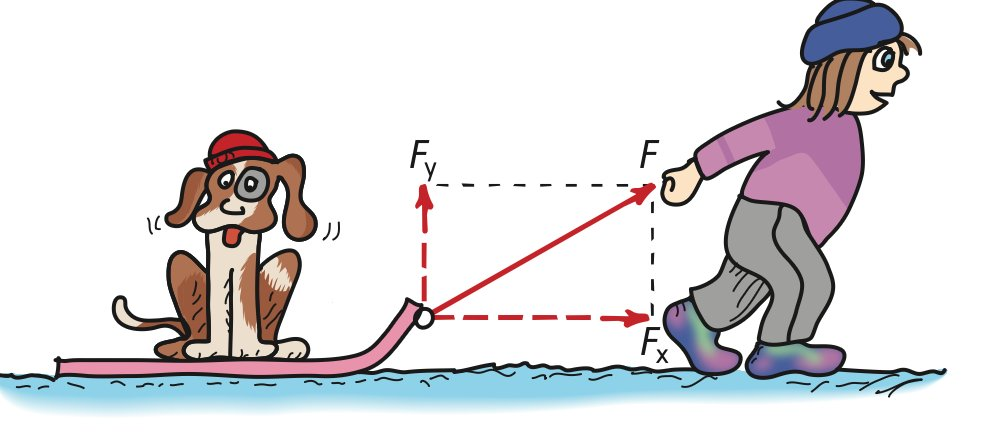
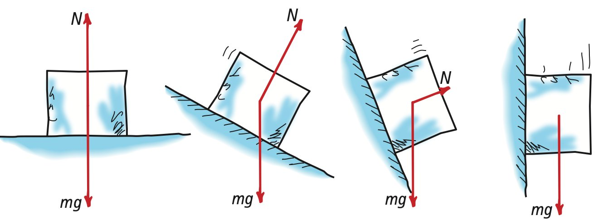
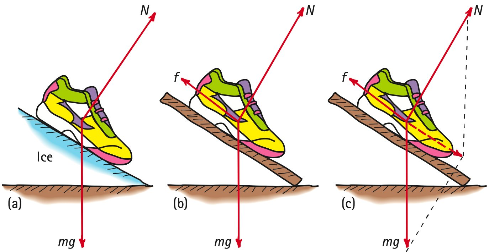
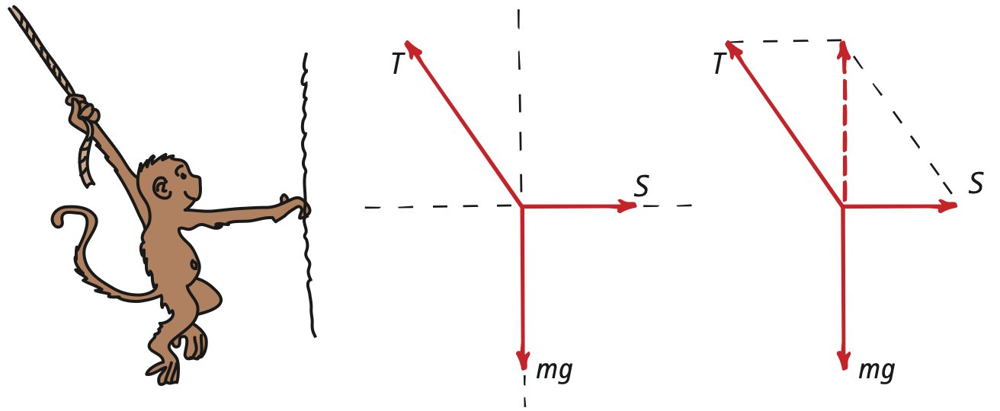
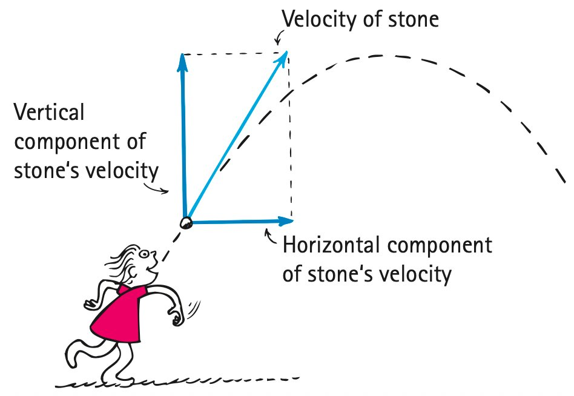

5.4 Vectors and the Third Law
Just as a pair of vectors at right angles can be combined into one resultant vector, any vector can be resolved into two component vectors perpendicular to each other. These two vectors are known as the components of the given vector they replace (Figure 5.21). The process of determining the components of a vector is called resolution. Any vector drawn on a piece of paper can be resolved into a vertical and a horizontal component.

Vector resolution is illustrated in Figure 5.22. A vector V is drawn in the proper direction to represent a vector quantity. Then vertical and horizontal lines (axes) are drawn at the tail of the vector. Next, a rectangle is drawn that has V as its diagonal. The sides of this rectangle are the desired components, vectors Vx and Vy. In reverse, note that the vector sum of vectors Vx and Vy is V.


In previous chapters we used vectors to depict weight and normal forces for objects on supporting surfaces. When a surface is horizontal and only gravity acts on an object, the normal force exerted by the surface has the same magnitude as mg, the force due to gravity. Snowboarder Nellie Newton illustrates this in Figure 5.23a. Newton’s third law is evident as Nellie’s weight mg is the force she exerts against the surface, while the reaction is the surface exerting an equal and opposite force N on Nellie.
Suppose, however, that Nellie is on an inclined surface, a hill (Figure 5.23b). Vector mg is vertical and acts downward, with only a component of mg pressing against the surface. So the normal force N is less. If, for example, the surface were vertical, no pressing would occur and N would be zero.
Note another thing. The component of mg perpendicular to the surface has the same magnitude as N (Figure 5.23c). Note also that Nellie’s acceleration down the hill is due to the component of mg that is parallel to the hill’s surface. For steeper hills, this component of mg and her acceleration would be greater. If the surface were vertical, acceleration would be a full g and Nellie would be in free fall! A block of ice on various friction-free inclines illustrates this diminishing of N for steeper slopes (Figure 5.24).

In Figure 5.25 we see three views of a shoe on an incline, first on a friction-free surface where only two forces act on the shoe (Figure 5.25a). When friction is involved, an additional vector f represents the force of friction (Figure 5.25b). Of interest is whether the amount of friction is less than or equal to the resultant of N and mg (Figure 5.25c). If f is less than the resultant, the shoe will accelerate down the ramp. If f is equal to the resultant, the shoe will be in equilibrium—which can mean either at rest or, given a nudge, sliding down the incline at constant velocity. Perhaps in the lab part of your course you’ll play around with these ideas.

In Figure 5.26 we see Monkey Mo suspended at rest in a zoo by holding on to a rope with one hand and the side of the cage with the other. Application of the parallelogram rule shows that the tension T in the rope is greater than mg. Note that the sideways pull S on the cage is less than mg. Although not indicated in the figure, can you see that S is equal to the horizontal component of T? And that mg is equal to the vertical component of T? Analyzing forces in terms of vectors and their components is nicely instructive.

Figure 5.27 illustrates vector components for velocity. In the absence of air resistance, the horizontal component of velocity remains constant, in accord with Newton’s first law. In contrast, the vertical component is under the influence of gravity and lessens with upward motion and gains what it lost in downward motion.

We’ll return to vector components of velocity when we treat projectile motion in Chapter 10.